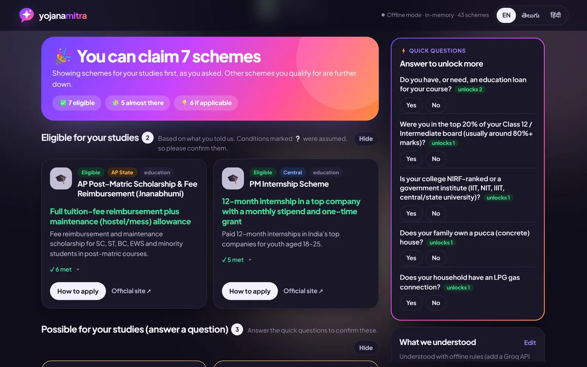
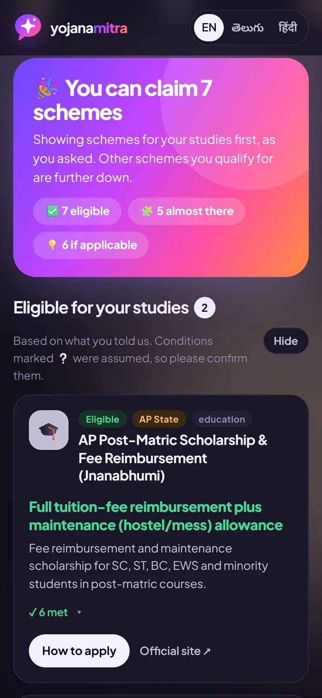
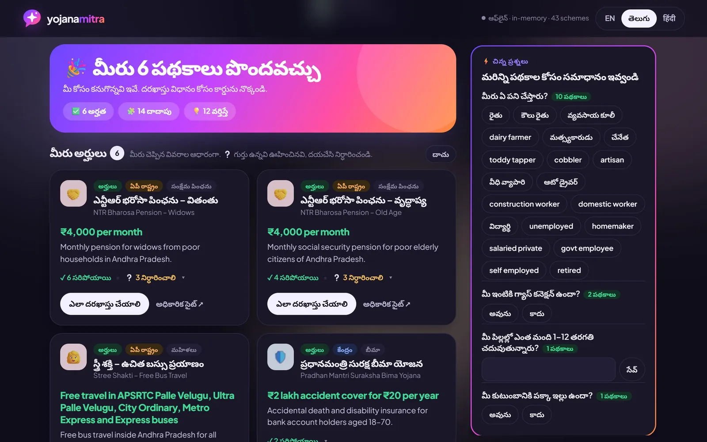
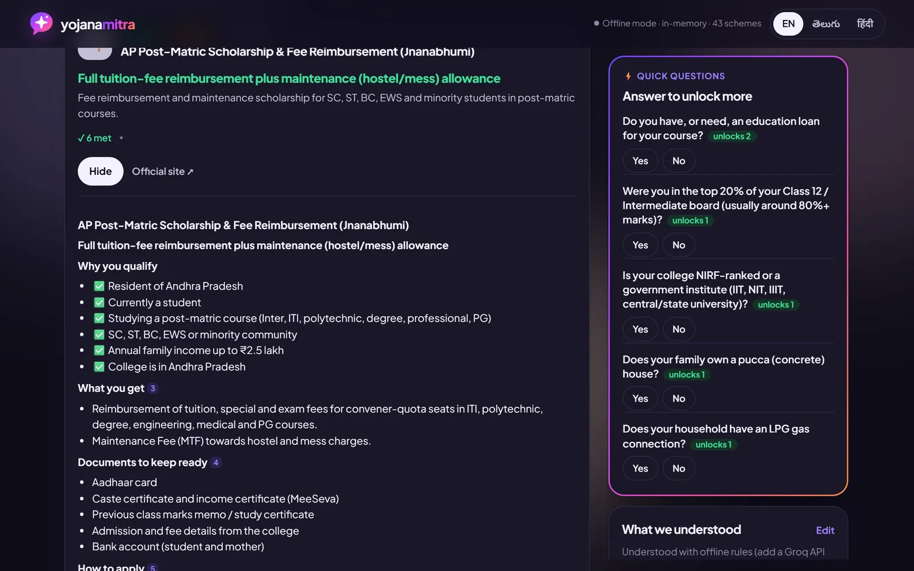
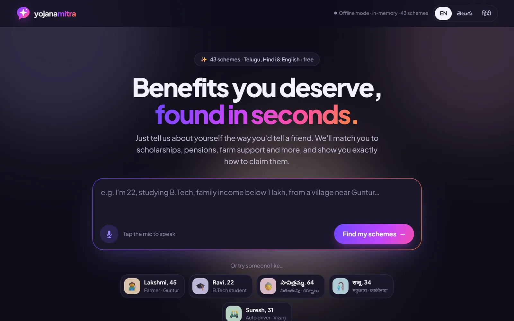

Benefits you deserve, found in seconds.
Describe yourself the way you'd tell a friend. Yojana Mitra checks every rule of 43 Andhra Pradesh and central government schemes, then shows what you can claim, which documents to keep ready and how to apply.
మీకు రావాల్సిన పథకాలు, క్షణాల్లో.


Help exists. Finding it is the hard part.
Pensions, scholarships, farm support and free health cover reach millions of families, but many people who qualify never apply.
Each scheme has its own age limits, income ceilings, land rules and exclusions, spread across different portals and notices.
Guidelines are written for officials, not for a farmer in Kurnool or a fisherman in Kakinada who speaks Telugu.
People hear about one scheme from a neighbour and miss three others they already qualify for.
Three steps. About ten seconds.
Tell us about yourself
Type or tap the mic and speak in Telugu, Hindi or English. No forms.
"I'm 22, studying B.Tech final year, family income below 1 lakh, from a village near Nellore."
We check every rule
Your age, income, land, work and family are checked against each scheme's real conditions. If something is missing, you get a one-tap question instead of a wrong "no".
Get a clear plan
For each scheme: why you qualify, what you get, the documents to keep ready and where to apply, with the official source linked.
Speaks Telugu, Hindi and English.
The whole app switches language with one tap, from scheme names to questions to explanations. Voice input understands te-IN, hi-IN and en-IN.

Not just "eligible". Why, and what to do next.
Every match comes with the rules you meet, the benefit amount, a document checklist and the steps to apply. Each fact is numbered back to the official guideline it came from.
- Rules you meet, ticked off one by one
- Anything assumed is marked "please confirm"
- Links to the official portal for every scheme

Missing a detail? One tap, not a long form.
If you didn't mention something, the app asks the single question that unlocks the most schemes, and shows how many each answer could unlock. Ask about scholarships and you see education schemes first.
- Questions ranked by how many schemes they unlock
- Results grouped: eligible, almost there, if it applies
- Ask anything in the chat box, answered from official text

Real situations, real benefits.
The five example people built into the app, and some of what Yojana Mitra finds for each of them.
- Annadata Sukhibhava₹20,000 a year incl. PM-KISAN
- Talliki Vandanam₹15,000 per school child a year
- Deepam 2.03 free LPG cylinders a year
- Post-Matric Fee ReimbursementFull tuition fee + hostel allowance
- PM Internship Scheme12 months in a top company, with stipend
- NTR Bharosa widow pension₹4,000 a month
- Stree ShaktiFree APSRTC bus travel
- Matsyakarula Sevalo₹20,000 during the fishing ban
- Sukanya SamriddhiSavings for his daughter
- Auto Driverla Sevalo₹15,000 a year
- PMAY UrbanHelp to own a house
Graph RAG, built so the answer can be trusted.
A knowledge graph decides eligibility with exact rules. Language models only read what you wrote and explain the result in plain words, citing official text.
Groq gpt-oss turns free text in 3 languages into a structured profile. Offline regex fallback.
(Scheme)-[:REQUIRES]→(Criterion) in Neo4j. 43 schemes, 71 shared rules, 195 edges.
Met / unknown / not met per rule. Unknowns become follow-up questions.
Multilingual embeddings + TF-IDF, merged with Reciprocal Rank Fusion.
Answers only from retrieved passages, with [n] citations, in the user's language.
Design choice: the LLM never decides who qualifies. Eligibility is a strict rule question, so the graph answers it the same way every time, and every decision traces back to a rule.
Share of recommended schemes that were correct, on 15 unseen hand-labelled profiles.
Share of the schemes each person truly qualifies for that were found.
Share of claims in answers supported by the source text (RAGAS method, 40 answers).
Questions where the right scheme came back first, incl. Telugu and Hindi.
See what you can claim.
Free, private and in your language. Describe yourself once and get a clear list of schemes, documents and next steps.